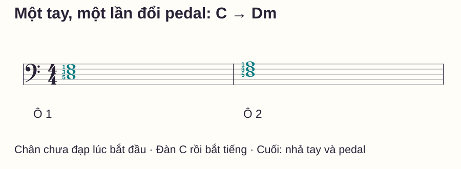
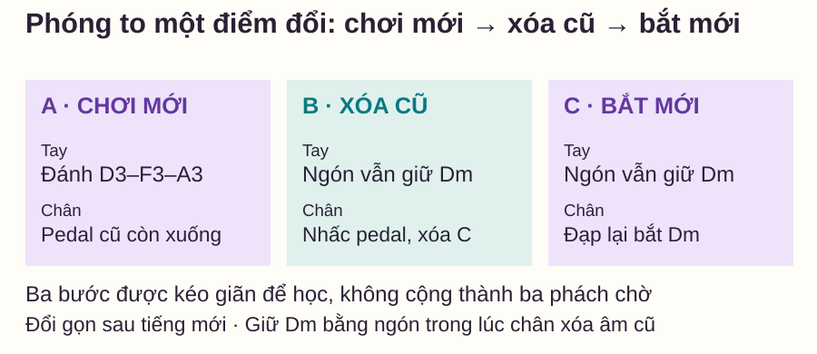
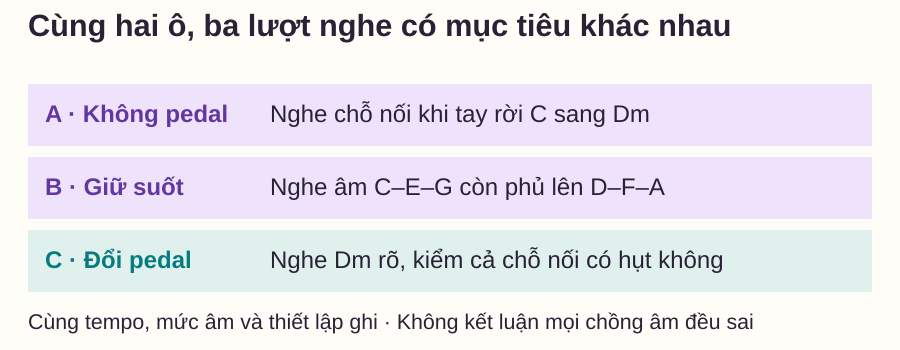

Kỹ thuật piano
Cách dùng pedal sustain piano: đổi pedal để tiếng rõ hơn
# Cách dùng pedal sustain piano: đổi pedal để tiếng rõ hơn
Bạn đạp pedal và câu nhạc nghe đầy hơn. Nhưng qua vài hợp âm, tiếng cũ vẫn ở đó, phần mới trở nên khó nghe. Nhấc chân sớm thì câu lại bị ngắt. Điều cần học là phối hợp thời điểm tay đổi âm với chân xóa âm cũ, không chỉ nhớ “đạp để ngân”.
Bài này dùng hai hợp âm tự biên soạn, một tay và một lần đổi pedal. Bạn sẽ nghe cùng mẫu theo ba cách rồi chọn cách phục vụ mục tiêu nối âm rõ. Đây là bài nhập môn pedal phải, chưa phải hướng dẫn mọi kiểu pedal hoặc mọi bản phối.
Trả lời nhanh
Pedal sustain giúp tiếng tiếp tục ngân sau khi ngón đã nhả phím. Để tập đổi pedal trong ví dụ C–Dm, chơi C trước rồi đạp để bắt tiếng; khi chuyển, chơi Dm trong lúc pedal cũ còn giữ, nhấc pedal ngay sau đó khi ngón vẫn giữ Dm, rồi đạp lại để bắt hợp âm mới. Nhấc quá sớm có thể tạo khe âm; đổi quá trễ có thể để hòa âm cũ chồng vào mới. Hãy nghe lại ở tốc độ chậm và chỉ tập một chỗ đổi. Đây là cách luyện cụ thể, không phải quy tắc phải đổi pedal ở mọi vạch ô nhịp.
Pedal sustain làm gì, và không làm gì?
Ở piano cơ, pedal phải nâng các bộ phận chặn tiếng để nhiều dây có thể tiếp tục rung sau khi phím được nhả. Piano điện mô phỏng hiệu ứng sustain theo thiết kế tiếng đàn và pedal. Yamaha — How to Use Keyboard Pedals giải thích chức năng này và cách phối hợp tay–chân để nối tiếng.
Pedal không biết âm nào là giai điệu, âm nào bạn đánh nhầm. Một nốt sai đã được pedal bắt cũng có thể tiếp tục ngân. Nếu chưa rõ nốt và nhịp, học riêng tay trước, sau đó thêm nhiệm vụ chân.
Nghe lâu hơn cũng không đồng nghĩa luôn nghe đẹp hơn. Có chỗ cần giữ cộng hưởng, có chỗ cần xóa âm; quyết định dựa vào chỉ dẫn, hòa âm, chuyển động giai điệu và tiếng đàn thực tế. Mẫu dưới chọn mục tiêu hẹp: nối hai hợp âm nhưng giảm phần hòa âm cũ còn sót.
Chuẩn bị chân và hai hợp âm
Ngồi để bàn chân phải chạm pedal thoải mái, gót có điểm tựa và phần trước bàn chân điều khiển pedal. Không trượt ra mép ghế hoặc rướn cả người để với pedal. Nếu chân chưa tới thoải mái, cần điều chỉnh cách kê/thiết lập với người hướng dẫn trước khi tập phối hợp.
Với piano điện, chọn tiếng piano có phản hồi lực và sustain bình thường. Nếu pedal giữ tiếng khi bạn không đạp, kiểm cách kết nối hoặc cài đặt đúng theo hướng dẫn của đàn; bài này không dùng cách đảo cực hay quy trình chung cho mọi thiết bị.
C4 là Đô giữa; C3 thấp hơn một quãng tám. Dm là Rê thứ, có các thành phần D–F–A. Ngón 1 là cái, 5 là út. Dùng tay trái cho cả hai cụm, từ thấp lên đều 5–3–1:
| Ô 4/4 | Hợp âm | Phím trái | Thời gian trên sheet |
|---|---|---|---|
| 1 | C trưởng | C3–E3–G3 | Cả cụm nốt tròn, bắt đầu ở 1 |
| 2 | Dm | D3–F3–A3 | Cả cụm nốt tròn, bắt đầu ở 1 |

Chơi không pedal trước, đếm đủ bốn phách mỗi ô. Nếu chuyển tay làm có một khe nhỏ, ghi nhận nó để so sánh; chưa cần cố giữ mọi ngón để nối hai cụm. Không có dấu nối giữa các nốt của hai ô.
Tập bắt tiếng trước khi đổi pedal
Chân ban đầu chưa đạp. Bấm cụm C, giữ phím rồi đạp pedal sau khi đã có tiếng. Để kiểm pedal bắt được âm, có thể nhả ngón trong một lượt thử riêng và nghe tiếng còn ngân; sau đó nhấc pedal để dừng phần ngân đó. Đây là phép thử chức năng, không phải thay trường độ trong lượt chơi nguyên sheet.
Quay lại mẫu hai ô. Bấm C ở số 1 và đạp sau tiếng bắt đầu. Giữ các phím theo thời gian đã đọc trong ô 1. Chân giữ pedal tới chỗ chuyển, không nhấp lại ở từng số đếm khi không có yêu cầu mới.
Nếu phải nghĩ quá nhiều việc cùng lúc, dừng nhịp để tập riêng thứ tự “đàn rồi bắt tiếng”, sau đó trở lại lượt đủ bốn phách. Đừng biến khoảng dừng để học động tác thành trường độ mới của câu nhạc.
Đổi sang Dm: chơi mới, xóa cũ, bắt mới
Trước đầu ô 2, bàn tay rời các phím C để tới Dm; pedal đang giữ phần ngân C. Đánh Dm tại số 1 ô 2, nhấc pedal ngay sau tiếng mới trong khi ngón vẫn giữ Dm, rồi đạp lại. Những âm cũ không còn được ngón giữ sẽ được xóa; cụm Dm đang giữ vẫn có thể tiếp tục ngân.

Yamaha — Fix It: Piano Pedaling Teaching Tips đề xuất học chậm việc đổi chân sau tiếng mới, khi các ngón còn giữ phím. Bạn cần nghe kết quả của thời điểm đổi, thay vì nhấc cả chân và đoán độ cao pedal.
Lượt đầu có thể thử từng bước không chạy nhịp. Lượt sau giữ nhịp nhưng giảm tempo đủ để chuẩn bị Dm. Cả ba âm Dm được đánh lại ở đầu ô 2. Không dùng pedal thay cho việc bấm đúng cụm hoặc coi các âm chung của những mẫu khác là tự được nối ngón.
Cuối ô 2, ngón giữ Dm đủ bốn phách. Khi tới số 1 tưởng tượng của ô 3, nhả tay và nhấc pedal để kết thúc phép thử. Không thêm một hợp âm mới; cũng không thả tay rồi để chân giữ vô hạn nếu đang kiểm điểm kết thúc.
Nghe ba lượt để biết mình đang sửa gì

Giữ cùng nốt, tempo và mức âm của tay trong cả ba lượt. Ở lượt B, chú ý E của C có còn làm màu Dm khó tách không. Ở lượt C, hỏi hai điều riêng: hòa âm mới đã rõ chưa, và trước tiếng mới có khoảng hụt không?
Nếu có thể, ghi một đoạn ngắn bằng cùng thiết bị, vị trí và mức âm lượng. Không thêm reverb hoặc đổi tiếng đàn giữa các lượt. Nghe một lượt chưa đủ để kết luận về kỹ thuật; hãy xác định đúng chỗ khác nhau rồi sửa một việc.
Bảng lỗi: đục, hụt tiếng hoặc chân làm rối nhịp
| Biểu hiện | Kiểm điều gì? | Thử sửa |
|---|---|---|
| C còn phủ lên Dm | Pedal đã nhấc đủ để xóa và đúng lúc chưa? | Giữ Dm bằng ngón, thử riêng nhấc chân rồi nghe |
| Hụt trước Dm | Có nhấc pedal trước khi tiếng mới vào? | Đọc lại thứ tự, tập chậm một chỗ chuyển |
| Dm tắt ngay khi nhấc chân | Các ngón Dm có nhả cùng chân không? | Giữ cụm mới bằng tay trong bước xóa |
| Có tiếng đạp hoặc cả người nhấp nhô | Chân có nhấc cả gót/cẳng chân không? | Đặt lại tư thế, giảm biên độ động tác |
| Tay dừng lâu để chờ chân | Đang ghép quá nhiều việc? | Tập riêng động tác không nhịp rồi ghép chậm |
Routine mười phút và tự kiểm
- 0–2 phút: kiểm tư thế, pedal và hai cụm C/Dm khi chân chưa đạp.
- 2–4 phút: thử bắt một cụm rồi xóa tiếng để hiểu chức năng.
- 4–6 phút: học ba bước quanh điểm vào Dm khi chưa chạy nhịp.
- 6–8 phút: chơi hai ô đúng nhịp và nghe ba lượt so sánh.
- 8–10 phút: sửa một lỗi, đặt lại và bắt riêng từ ô 2.
Tự hỏi: khi nhấc pedal để xóa C, tay đang giữ hợp âm nào? Có cần đổi pedal ở mỗi phách không? Cuối bài, chỉ nhả ngón đã đủ kết thúc phần ngân chưa?
Đáp án và điều kiện mở rộng
Tay giữ Dm khi chân xóa C. Trong mẫu này chỉ đổi ở chuyển hòa âm, không mỗi phách. Cuối lượt phải nhấc pedal để xóa phần ngân theo điểm kết thúc đã chọn. Có thể mở rộng khi bạn chủ động tạo được ba lượt nghe khác nhau, giữ Dm trong bước xóa và không thêm khoảng chờ. Chưa cần thêm giai điệu, hợp âm nhảy xa hoặc half-pedal cùng lúc.
Đọc thêm
Hợp âm piano cơ bản giúp kiểm các thành phần hợp âm. Ghép giai điệu và hợp âm tay trái học hai bè không pedal trước. Vòng I–IV–V có một tiến trình khác để luyện khi việc đổi đã rõ.
Dấu nối và dấu luyến giúp phân biệt âm giữ theo ký hiệu với phần ngân do pedal.
Câu hỏi thường gặp
Cứ đến vạch ô nhịp là phải đổi pedal?
Không. Vạch ô chia thời gian; quyết định pedal còn phụ thuộc âm nhạc và chỉ dẫn. Trong ví dụ này hòa âm đổi đúng đầu ô 2 nên điểm học trùng vạch.
Có nên đạp sẵn trước tiếng đầu tiên không?
Một số hiệu ứng có thể dùng cách đó. Lượt này bắt đầu chân chưa đạp để học “đàn rồi bắt tiếng” và nghe rõ thao tác; không coi đây là mọi cách mở đầu bản nhạc.
Đàn không có pedal có tập được bài này không?
Có thể học nốt và thời gian, nhưng không kiểm được cách xóa/bắt tiếng bằng chân. Không coi giữ nốt bằng tay là đã luyện được phối hợp pedal.
Đạp sâu bao nhiêu là đủ?
Ở lượt nhập môn, cần phân biệt rõ trạng thái có giữ và đã xóa trên chính nhạc cụ. Độ sâu hoạt động khác nhau; half-pedal và xử lý cộng hưởng tinh hơn là bước riêng.
Tại sao vẫn đục dù đã nhấc chân?
Có thể nhấc chưa tới điểm xóa, còn giữ các phím cũ, dùng hiệu ứng ngân khác hoặc đổi quá trễ. Kiểm từng yếu tố riêng; đừng kết luận chỉ từ một lượt nghe.
Pedal có thay cho legato ngón không?
Pedal và ngón là hai cách điều khiển tiếng có quan hệ nhưng không đồng nhất. Học rõ điểm giữ/nhả và mục tiêu câu nhạc trước khi quyết định phối hợp chúng.
Nguồn và ghi chú biên soạn
- Yamaha — How to Use Keyboard Pedals, Jerry Kovarsky: chức năng sustain và phối hợp đổi pedal.
- Yamaha — Fix It: Piano Pedaling Teaching Tips, Hannah Creviston: tư thế chân, giữ phím mới khi đổi và cách học chậm. Kiểm ngày 28/10/2026.
- Hai ô C–Dm, hình, phép nghe và routine tự biên soạn, chưa có giáo viên độc lập review hoặc thử nghiệm học viên. Không sao chép sheet nguồn và không hứa đạt kỹ thuật sau mười phút.